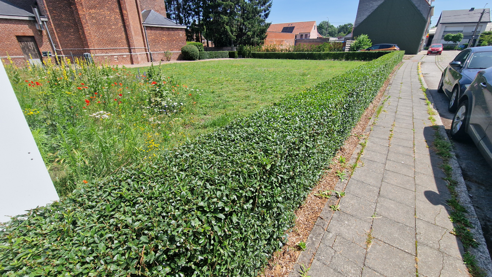
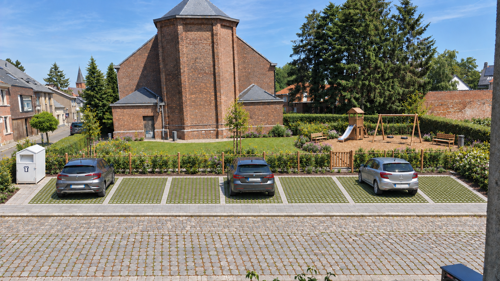
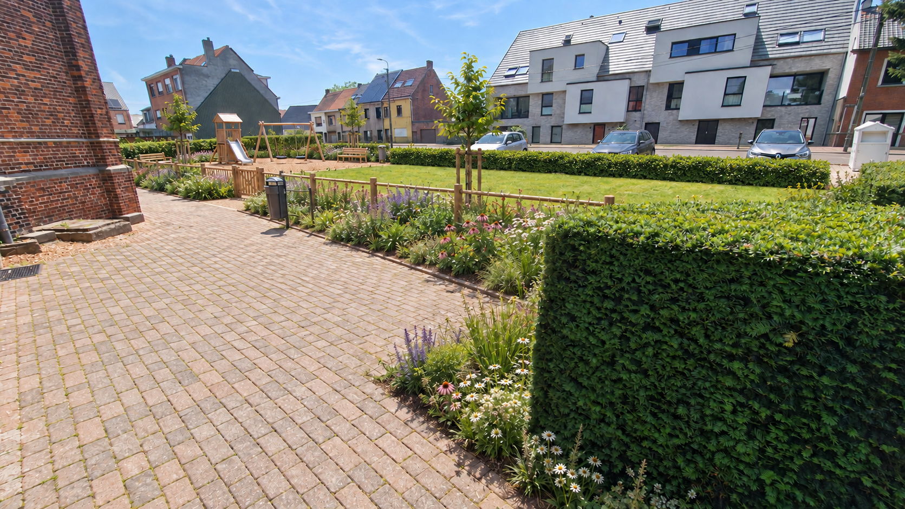

Parkeren krijgt een vaste plek
Waterdoorlatende parkeervakken aan de straatzijde helpen de parkeerdruk op Kerkstraat opvangen. De aansluiting volgt de straatlijn; de rijbaan mag niet onbedoeld versmallen.
DEELGEBIED 03 · ZUID
Aan de Kerkstraat ligt de kans voor een open speelweide met natuurlijke beplanting, comfortabele banken en een geordende parkeerstrook aan de straatzijde.
Idee van een vrijwilliger · geen beslist planIk verzamel ideeën en reacties van buurtbewoners. Ik neem zelf geen eindbeslissingen over de inrichting, het budget of de uitvoering. Die liggen bij de bevoegde instanties en eigenaars.

HET VOORSTEL
Waterdoorlatende parkeervakken aan de straatzijde helpen de parkeerdruk op Kerkstraat opvangen. De aansluiting volgt de straatlijn; de rijbaan mag niet onbedoeld versmallen.
Het centrale grasveld blijft vrij voor spel en ontmoeting. De behoefte aan enkele natuurlijke speelaanleidingen of een kleine buurtspeeltuin wordt onderzocht.
Zachte beplantingsranden en bloemrijke eilanden omringen de weide. Een ondiepe infiltratiezone buiten het speelvlak vangt regenwater op, zonder permanent open water.
Twee toegankelijke banken met rug- en armleuningen, een vuilnisbak, goede wandelverbindingen en een ordelijke plaats voor de textielcontainer maken het plein bruikbaar.

VOOR DE BUURT
Binnen circa 24 bij 18 meter worden parkeren, spelen en groen zorgvuldig afgewogen. Het aantal parkeerplaatsen volgt uit verkeers- en parkeeronderzoek.
HUIDIGE SITUATIE & VOORSTEL
Vergelijk de bestaande omgeving met de voorgestelde inrichting. De visualisaties zijn indicatief en tonen geen goedgekeurd uitvoeringsplan. Selecteer een beeld om het volledig te bekijken.


